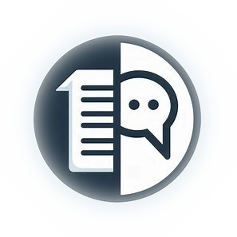

Практик транзактно-аналитического коучинга
Тренер программы: Илья Шмелев
Формат: онлайн
Старт: 28-29 сентября 2024
Тренинг для:
-
Коучей и психологов
- Инструменты для работы с клиентами
- Сертификат
-
Консультантов и тренеров
- Инструменты для работы с клиентами
- Сертификат
-
Тех, кто развивается
- Технологии для работы с собой
“Чаще всего детские решения, а не сознательное планирование в зрелом возрасте определяют судьбу человека”
В чем ценность этого курса для вас:
- Получите самые необходимые в работе инструменты использования ТА в лайфкоучинге и организационном консультировании: ТА диагностика, модели и инструменты работы с коучи, командами и организациями.
- Научитесь диагностировать «боли» и «потребности» коучи.
- Получите целостную систему анализа человеческих отношений на уровне личности, групп, организаций.
- Пройдете самодиагностику и поймете, какие сценарии управляют вашей жизнью, жизнью команды и организации. Научитесь трансформировать сценарные паттерны, исходя из осознанных целей и поставленных задач.
- Повысите результативность в работе с коучи, командами, организациями.
- Сможете внедрить в свою жизнь и работу c организациями, командами полученные, модели, техники и инструменты
- Овладев практическими инструментами, Вы сможете повысить стоимость своих услуг.
Цели обучения
-

Освоить инструменты транзактно-аналитического коучинга в лайфкоучинге и в работе с организациями. 50% практики и 50% теории.
-
Сертификация на уровень «Практик транзактно-аналитического коучинга» или «ТА в консультировании» (при выполнении условий сертификации)
-
Сертификат участия
Программа курса
-
Усвоите принципы ТА в коучинге и консультировании
-
Поймете границы между ТА коучингом, ТА консультированием и ТА психотерапией (1 компетенция коучинга по Леонарду)
-
Научитесь выявлять и работать с неудовлетворенными потребностями (на уровне личности, отдела и организации) по Э. Берну, Р. Эрскину и Дж. Янгу. Колесо баланса личностных и организационных потребностей.
-
Освоите принципы использования ТА в организациях (анализ и диагностика организационной культуры в терминах ТА)
-
Выработаете навык контрактирования и соглашения с клиентом (контракт на сохранение, контракт на изменение). Усвоите уровни контрактов, 8 этапов контрактирования и 4 требования к контракту по К. Штайнеру
-
Научитесь диагностировать эго-состояния: определять структурную и функциональную модели эго-состояний
-
Научитесь понимать и отслеживать транзакции. Определение транзакций. Типы транзакций
-
Усвоите правила эффективной ТА коммуникации
-
Увидите возможности ТА коучинга в индивидуальной работе и в работе с организациями
-
Научитесь использовать план сессии по Э. Берну, а также по M. Novellino, C. Moiso
-
Усвоите принципы «поглаживаний» в общении
-
С помощью речевых инструментов научитесь выявлять и работать с «предрассудками» и «иллюзиями».
-
Овладеете техникой «очистки» (деконтаминации) и усиления Взрослого эго-состояния (техника «9 шагов»).
-
Получите диагностические методики анализа эго-состояний
-
Научитесь системно анализировать психологические игры у коучи, в командах и в организациях.
-
Узнаете критерии психологических игр.
-
Познакомитесь с условиями формирования игр, а также с формулой игры.
-
Усвоите техники работы с играми коучи, на уровне команд и организаций.
-
Освоите подробный анализ существующих психологических игр. Игры 1, 2 и 3 степени.
-
Узнаете 6 преимуществ психологических игр.
-
Познакомитесь и научитесь работать с драматическим треугольником Карпмана (подробный разбор позиции жертвы, Спасателя и Агрессора на уровне слов, эмоций, выгод, цен, а также способы вывода коучи во Взрослое эго-состояние).)
-
Разберете более 10 приемов работы с психологическими играми и манипуляциями коучи.
-
Научитесь отслеживать переносы и контрпереносы в коучинге, паттерны, которые способствуют или мешают двигаться человеку к цели.
-
Научитесь использовать модель шести личностных адаптаций («Сверхреагирующий энтузиаст», «Ответственный работоголик», «Блестящий скептик», «Творческий мечтатель», «Игривый бунтарь», «Очаровательный манипулятор»).
-
Овладеете навыками определения и диагностики различных адаптаций.
-
Усвоите специфику консультирования в зависимости от личностных адаптаций.
-
Научитесь использовать «двери» коммуникации.
-
Научитесь качественно устанавливать контакт в зависимости от личностной адаптации собеседника.
-
С учетом личностных адаптаций научитесь эффективно создавать и поддерживать группы, команды и организации.
-
Усвоите механизм формирования и инструменты анализа индивидуального и организационного жизненного сценария (победителя, побежденного, не победителя)
-
Научитесь распознавать 6 сценарных процессов: «Пока не», «После», «Никогда», «Всегда», «Снова и снова» (Почти 1 и Почти 2), «С открытым концом».
-
Овладеете техниками работы с рабочими стилями («Будь совершенным», «Радуй других», «Старайся»; «Будь сильным», «Спеши»)
-
Усвоите разрешающие фразы и технику работы с родительскими программами (12 программами: не живи, не будь собой, не будь ребенком, не расти, не думай, не будь успешным, не делай, не будь первым, не принадлежи, не будь близким, не будь здоровым, не чувствуй).
-
Научитесь диагностировать 4 экзистенциальные позиции в ТА.
-
Усвоите принципы организационного сценария (4 темы в повседневной жизни организации по Розе Крауз).
-
Научитесь определять публичную структуру групп, команд и организаций
-
Научитесь диагностировать организационное и групповое «имаго» (мысленное представление об организации, команде и группе)
-
Научитесь работать с ТА лидерством (ответственный лидер (Родитель), эффективный лидер (Взрослый), психологический лидер (Дитя)).
-
Освоите публичный и частный аспекты в структуре групп, команд и организаций.
-
Научитесь работать с границами в группе, команде и организации.
-
Овладеете принципами изменения имаго в групповом процессе («Предварительное групповое имаго», «Адаптированное имаго», «Операционное имаго», «Близость и автономность»).
-
Научитесь определять ключевые потребности — «Голоды» -члена группы, команды, организации.
-
Усвоите четыре «Окна» организации (1.ориентированное на организацию; 2 ориентированное на людей; 3.ориентированные на окружающую среду; 3 ориентированное на результат)
-
Разовьете понимание роли и значения «Эвгемера» в организации (основатель организации и его история)
-
Увидите возможности 5 этапов ТА развития организаций и групп
*доступен только для проф.коучей (не менее 60 часов, уроверь РСС) и дипломированных психологов (бакалавриат/магистратура/специалитет)
Предоставление подтверждающих сертификатов/дипломов обязательно.
Для допуска к сертификации необходимо подготовить:- 10 аудиозаписей как Коуч в тройках в группе с обратной связью себе (коуч записывает на аудио свою работу и обратную связь от наблюдателя).
- 1 аудиозапись с транскрибацией с внешним клиентом и подробным эссе-анализом своей сессии (пример предоставляем). Запись не требует внешней обратной связи от наблюдателя. После сессии пишите подробную обратную связь себе по модели «Гамбургер». Обратная связь минимум 200 слов, где в равной пропорции описывается Что понравилось? и Что добавить? в свою работу.
- Написать тест.
- Пройти собеседование (или дополнительное тестирование) по тем модулям и занятиям, которые пропустили и смотрели в записи.
- Посетить в качестве активного участника минимум 3 супервизии.
Сертификация на уровень «Практик транзактно-аналитического коучинга» НЕ входит в стоимость основной программы и приобретается дополнительно (стоимость 10000 рублей). В стоимость включено: посещение супервизий (без пакета "Сертификация" стоимость 2000 рублей/1 посещение), все доп.встречи, тестирование и пересдачи, проверка сертификационных материалов, сертификат "Практик транзактно-аналитического коучинга".
Расписание курса
Курс состоит из 5 модулей (время московское*)
-
Модуль 1.
Базовые техники транзактного анализа в лайфкоучинге и организационном консультировании.
Даты проведения: с 10:00 до 18:00
-
Модуль 2.
Продвинутые техники транзактного анализа в лайфкоучинге. Часть 1
Даты проведения: с 19.00 до 22.00.
-
Модуль 3.
Продвинутые техники транзактного анализа в лайфкоучинге. Часть 2
Даты проведения: с 19.00 до 22.00.
-
Модуль 4.
Продвинутые техники транзактного анализа в организационном консультировании.
Даты проведения: с 19.00 до 22.00.
-
Модуль 5.
Транзактно-аналитическое лидерство в работе с организациями.
Даты проведения: с 19.00 до 22.00.
Отзывы участников
Выберите удобный вариант участия
-
1 модуль
14 500 рублей (помодульная оплата) (Действует скидка 10% для выпускников ICU)
-
Пакет "Сертификация"
14 500 рублей (Оплата производится только после прохождения собеседования с организаторами)
-
Полная оплата программы
62 500 рублей (12 500 рублей за модуль)
-
Программа + пакет "Сертификация
72 500 рублей (полная оплата)
Илья Шмелев - тренер
• Старший преподаватель НИУ ВШЭ (магистерская программа
«Консультативная психология. Персоналогия», трек
подготовки «Транзактный анализ. Мультипрофильное
консультирование»)
• Мастер-тренер ICU
• Кандидат психологических наук (PhD)
• Сертифицированный бизнес-тренер международной категории
• Certified Professional Master and Trainer
of Coaching
• Закончил международное обучение по транзактному
анализу.
• Тренерская и консультационная
деятельность с 2004 года.
• Соучредитель ООО «Коучинг Центр» (г.Москва)
• Успешно проведено более 1200 тренингов и семинаров
в более чем 10 регионах России, странах СНГ,
ЕС и др.
• Соавтор колод коучинговых ассоциативных карт
«КАК» и «Будущее».
Для допуска к сертификации*
необходимо сдать до 30.03.25
*доступен только для проф.коучей (не менее 60 часов) и дипломированных психологов
(бакалавриат/магистратура/специалитет)
Предоставление подтверждающих сертификатов/дипломов обязательно.
3 супервизии в группе
Даты супервизий — уточняются, с 19.00 до 22.00
10 аудиозаписей
Как Коуч в тройках в группе с обратной связью себе от наблюдателя
1 аудиозапись
С транскрибацией с внешним клиентом и подробным эссе-анализом своей сессии
Часто задаваемые вопросы
«А вдруг не получится», «Что если я пропущу занятие» и т.д. 1. Практическое применение знаний Многие интересуются, насколько курс ориентирован на практику и поможет ли он начать работать с клиентами. Важен вопрос: «Будет ли достаточно практических занятий, чтобы уверенно начать консультировать?» 2. Качество преподавания и поддержки Пользователи хотят знать, насколько опытные и вовлеченные преподаватели, получают ли они своевременную обратную связь. Интересует наличие кураторов и возможность задать вопросы в процессе обучения. 3. Структура и содержание курса Важен вопрос: «Насколько курс структурирован и последователен?» Интересует, охватывает ли программа необходимые темы для начала практики. 4. Технические аспекты онлайн-обучения Потенциальные участники беспокоятся о технических сбоях и удобстве платформы. Интересует, насколько легко ориентироваться в учебных материалах и заданиях. 5. Стоимость и соотношение цена/качество Многие сравнивают стоимость курса с его содержанием и возможностями, которые он предоставляет. Важен вопрос: «Оправдает ли курс свои затраты?»